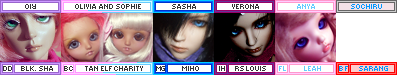

Around 2007, I got interested in visual kei. I spent my days dreaming of Miyavi and Gackt, drawing gaybies, and searching deviantArt and other online art communities for whatever inspired me. I wrote in 2008 that I discovered BJD through a club on a deviantArt rip off site called MangaBullet. I don't remember this at all but my memory is hard to trust. Perhaps I discovered them there first, but this photo of DoD Ducan was the first to capture my attention. According to the creation date of that file on my HDD, July 23, 2008 was the day I discovered DoD Ducan and the beginning of the end.
I spent the next few years mopping floors, collecting Christmas and birthday money, and doing anything I could for spare change to buy dolls. I was lucky to be in a good situation where after a few months I was able to afford my first doll. My mom was supportive of me getting cute girl dolls (not so much the boys) and helped me a lot. Not everyone is so lucky!
Deciding on a doll is hard! Do you choose to go cheap? Start off expensive? Is it worth saving $50 to try to paint the doll yourself? What if you don't even like it when you get it? I looked at so many dolls and saved tons of photos! Once in a while, I started to try to convince myself that this very inexpensive doll would be good because it meant almost immediate gratification. I'd still have to wait months for the doll to be made, but I wouldn't need to wait to save up any longer. I luckily never went through with those ideas. I was obsessed with the idea of owning a limited doll. In these days, tan resin and alternate sculpts with elf ears were generally only offered on a limited basis. Even if I didn't care for these traits, this made the dolls that much more attractive.
The first doll I attempted to order was KDF Bory. My mother didn't have a Paypal yet and the site was insecure. I decided to not order this doll to avoid sending her credit card info in plain text. A few weeks (or even days) later, DoD released their holiday limited Black Elf Sha. I rather impulsively decided this was the doll for me! I wanted a limited DoD doll so bad so he would be extra special. My mom still didn't have Paypal, so we had to fax her credit card and ID to South Korea. We couldn't figure out how to connect to their fax machine so we kept trying and trying sending her info into the abyss. It was very silly of me after deciding against Bory over an insecure site! After a lot of tries and emails back and forth between us and a very annoyed DoD employee, we made a Paypal and sent the funds. I was likely the last to get my order in after the end of the sales date.
Someone on DoA had linked a y!j auction listing of the first doll to pop up. He was RED instead of tan. I was really nervous to get mine! He didn't match the promo photos at all! Slowly, more started coming in and the resin color started to match the prototype. I finally recieved mine! Interestingly, they sent him to the billing address rather than the shipping address. He unexpectedly arrived on a Saturday to my home. His color was close to the prototype, but he came with many flaws. Looking back, he was a terrible buy for the amount of money I spent on him. I believe he was $740 after shipping.
I went to my first and second meetup before Rio even arrived. My future friend had brought a tan Bambicrony tiny to our second meetup, which I thought was way too cute! About a week later, I ordered a limited tan Bambicrony tiny. She arrived before Rio did. Before the end of the year, I bought a secondhand non-limited floating head for $150 and another big limited tan boy! My floating head sat in a box for 13 years before getting his body. I obviously wasn't as enamoured as I thought. Money was burning a hole in my pocket around the Christmas holiday events on each site. I had decided on an Iplehouse boy after considering my options. I had accumulated 4 BJD in 2009.
I really wanted a Minifee girl but FL didn't offer any faces I liked. I kept waiting and waiting and in 2010, I ordered a limited fullset LittleFee instead. She had all the impressive engineering of a Minifee and my mom and I both liked her sweet baby face. If you've never seen hiritai's Hayden, you need to look right now!! I fell in love with this beautiful boy the year before, but Migidoll only sold doll heads in limited periods through email with the information being on her blog in Korean. I wasn't brave enough to ever order one from her. While perusing the DoA marketplace, I found a boy with a similar faceup, already had a body, and was $550 with none of the pain of ordering from Migi or hybriding! I bought him and he arrived after getting stuck in Texas for a few days.
My meetup friends had an obsession with BlueFairy dolls. I never really understood it until I came across a photo of a Sarang on DoA. She was so sweet! So cute and happy! I kept her in my mind, not sure if I wanted to buy one. My friend was buying tons of BF dolls and was selling a few she didn't need. She had bought a secondhand blossom sarang for the body to swap with her BF Xiao. She put the Sarang with the original body up on DoA a week or so before a meetup and I messaged her and was like BRING THAT DOLL. She brought the doll, in pieces, in a plain cardboard box to the meetup at my home. I strung her and then asked my friend how much I owed her. I asked my mom to write her a check for $270.
A couple years later in 2011, I decided it would be really fun to make a visual kei boy. I needed a doll that I wasn't going to fear destroying. I found a Bobobie Espree on Denver Doll Emporium and put all my creative energy into making this doll fun. I had a good time, but the base sculpt of the face and body left much to be desired. This is the only doll I've sold. The same BF loving friend messaged me alerting me to a blank SF Hana on the marketplace for $150! What a steal! I messaged the seller and committed, but the seller messaged me and said she made a mistake, and the doll was a boy. I took her offer of a $50 discount and I recieved my cheapest doll. About a year later, my same friend said she wished her Hana had a natural looking faceup but didn't want to wipe it, and traded me for the Hana head that I had painted myself.
I started college after this doll. I did not take any of my dolls to the dorms and didn't feel connected to them anymore. College was awful so I didn't come back after the first year.
Once I was home, I tried to convince myself I only wanted girl dolls. Dollfie Dreams started to become cute around this time so I had my eyes on a few of those as well. I had no source of income and only what I had saved up earlier. I decided to list my boys for sale for funds to buy girls. I priced them emotionally, so none of them sold. I'm happy I still have them and I love them dearly.
I discovered SD Lieselotte during her 2013 release. I fell in love, lost her lottery, and looked bleakly into my already empty wallet. Sites like Mandarake and Dollyteria became known to Western collectors around this year, making secondhand Japanese dolls more affordable than ever before! I scrounged up enough to order an unassembled kit Unoa Lusis, who was a fever dream just a few years before. It was then after putting my 3 minis next to each other, I decided it was time for my Bobobie to go. I sold him on DoA to an owner who listed him for sale again upon arrival.
VolksUSA had a storefront closing sale and I was able to purchase my DD for around $350 for everything. I made a doll friend who ghosted me, but it was fun while it lasted.
I transfered to a college that was not a party school and took only my DD with me. During my time there, I asked my mom to buy me a Kikipop for my birthday and she actually did it! I was so happy to have a Kinoko Juice doll. After I got kicked out, I transferred back to my original party school and moved in with Ryan. I had my DD, Kikipop, Sochi, and Unoa with me until I graduated, although I didn't play with them much.
Graduating was great because now I had time and money for dolls with my first job. I decided that with some disposable income, I was going to buy a doll! I was dead set on it! I just had to wait to find the right one. I made a list of Dollfie Dreams I wanted but the right doll and time just hadn't happened. Then something very wild happened. Volks announced an open preorder for SD Lieselotte. I thought, I panicked, I considered, and then finally decided and put in my order at midnight of opening of the preorder period! Many many months passed and I slowly snuck my dolls from my mom's house into my home under Ryan's radar. Did he ever notice?? (He did)
My Hina finally arrived! It was the best dolly day ever! I took her out to play every day for over a month after recieving her. While doing my eBay perusing, I found a KJ Kiki mislabeled as a Kikipop. I used my best haggling skills and bought myself a blank resin Kiki.
I had a wonderful meet up group called Inland Northwest Resin (INWR)! We had a facebook page and our own forum! We had so many fun meetups and it was just about the first time in my life my mom would let me go off and do things without her.
It was so fun to gush over the new dolls coming out and try out other dolls and see if I like them enough to want to own them myself. Most of us got into a weird obsession with Bluefairy together and probably had the largest number of BlueFairy dolls per capita back in the day. Together we went to gardens, cafes, restaurants, and had dolly "spa" meets.
I got to attend multiple RadCons with these girls as well as Uncanny Dream 2011, PNW BJD Expo 2013 and 2014.
thank you to all my doll comm for spending time with me over the first years! Rei, Jenn, Bri, I miss you all so much! and thank you to Amanda for listening to me obsess over them for more than a couple years! also sorry for getting you into an expensive hobby :p
Newest on top!
All of these dolls were planned to be purchased at one point. They are better left in my memories than in my house. I don't think I would purchase any of these now.
Petsha was my first doll love! I never pulled the trigger on her because I always would rather have SD sized dolls. Lately, I've looked back on her and I realized I never loved her face. I only loved her fullset. One of the girls in my comm even had her and her fullset and even seeing her IRL, I never felt like I needed to buy her right that instant. I looked recently at her and realized I don't even like her face. I'm glad I never got her, I don't think I would have been happy with her.
She is quite pretty, but the more I look at her she looks like a bootleg volks doll. Is that a bad thing? At least the DG61 body looks nicer than the SD16.
This little grumpy dude was almost my first doll until I saw Luts' site wasn't secure during checkout.
Actually, she is pretty cute after all. In general, I like Angell Studio's faces.
This dude probably wouldn't have been a bad choice.
I got my hopes up too much once and now I dont even like looking at her. Obviously it wasnt true love.
The first Chloe and the best Chloe. I saw one at Uncanny Dreams (2011) and she was just stunning! She has elf ears though so I'll skip her.
She's just classic at this point, okay? I may think she makes a very good tiny boy.
The name "Den of Angels" is a mistranslation of Tenshi no Sumika (source). The site was originally a yahoo group but was quickly outgrown due to the 32 MB limit. Aimee then created a personal doll webpage along with a phpBB forum. In 2009, Aimee's doll homepage was removed and only the forum remained.
Around 2010 to 2015, Den of Angels was invite only. Current users could invite others, but their account was on the line if they invited someone who had an account already or had been banned. The reason to close off the forum could have been spam bots or scammers but I dont believe the true reason was ever announced. This happened before the recast epoch.
A DoA user had a fire in her home and one of her dolls managed to survive. Check out her thread for photos of the damage and restoration.
If you think these girls were as catty as the girls on /cgl/ you are dead wrong. It was more tame than you'd expect.
This forum is completely gone, just like DoD and many others. It was an 18+ forum based on erotica, so of course they had some funky photos... I may have collected a few of the worst I could find while it was still up. this link is incredibly not safe for life. i previously said this forum was resinality, but i am fairly sure it was condoll after all.
Back around 2009, a friend in my meetup group told us that Portland had not one, but two separate meetup groups! One had only Volks elitists and did not allow any dolls but volks, while the other did not allow volks dolls, but allowed everything else. I have found no proof of this rumor being true. Who knows what group people who owned both would join!
Chicabi used to go by "Chica Bonita" until they googled their own name.
In 2008, HZ released the Roro line, which was lovingly(?) dubbed the "yaoi starfish".
In 2011, Impldoll announced a new tiny scorpion boy. They gave him the most loving name they could think of, Penis. His name is Colin now.
In 2006, Doll Chateau created a new tiny doll named Miriam to promote child abuse awareness. A lot of people were shocked at the original promo photos of her in the speedball inspired outfit and other questionable poses. The promo photos were reshot in a candy theme.
In 2019, Volks released two new standard DDP girls, Ribbon and Colon. After a few good laughs, Colon's name was changed to Coron.
I used to really not like Volks dolls when I first started researching BJDs. How have they become one of my favorites now?? Faceups.
Early Volks faceups were extremely basic and plain! Check out the standard models up to the 2010 versions. Sure they look fine, but they dont look $700 fine. By this time, other companies were offering amazingly beautiful dolls for a fraction of the price. Default Volks dolls just looked like a joke next to them.
Around 2011 or so, Volks stepped it up. The 2014 standard models are lovely! You can see this in the Dollfie Dream releases as well, but DDs also had a sculpting style upgrade as well. I could finally see the beauty in a Volks doll without having to look up customized ones.
Now the old faceups look really classic. I think I'd still probably wipe one though.
HZ was a Chinese BJD company starting in the late 2000s that has since closed down. The doll designer was Heise, a powerful Chinese fujoshi.
HZ released 1/3 scale boys starting in 2009. Many of the promo photos were archived on this blog. A few are pretty spicy!!
anything I write here is probably spicier than anything posted on Den of Demons
The creator of DoA. She wrote a book called Japan Ai: A Tall Girl's Adventures in Japan and I highly recommend you spend a couple bucks on an old copy if you love Volks.
Aeryn had tons of boys every teenage girl had a crush on! She has a bunch of stories about her dolls' characters but you can skip those if you're over 18. Skip them if you're under 18 too because they are SPICY.
Sold a recast Ryoya Kanoe to Knibitz (probably unknowingly). A few months later, she recieved a marketplace ban (unrelated to the recast incident) from DoA and hasn't really been active since. She did that thing where you disappear off the face of the Earth with multiple open transactions.
Belladonna (Carmen) She was once quite a popular photographer and faceup artist with many beautiful boys. Sisters with Aileen/gardenofmoons/frozen wings and Sam/morbidollz. All based out of Montreal.
Belladonna once had 2 doll heads run over by a car while she was painting them (source).
They all made very edgy and cool OCs together and took great photos. Both Belladonna and Morbidollz were faceup artists. I wish my sister was this fun.
They're now moderately successful cosplayers together. Check them out on tiktok or don't.
US faceup artist and photographer. Has a darker, emo style that screams late 2000's. Also goes by asainemuri.
Indonesian photographer. Loves men and you can tell. Total fujoshi and I say that in the nicest way possible.
Faceup artist, photographer, and pioneer of the oversized sweater, yoga pants, alpaca wig minifee movement. I'm not sure any other artist has had such an impact on the western community.
She doesn't participate in BJDs anymore, but has moved on to other art projects. Her influence will likely last forever though.
She posted tons of teen drama photostories starring her minifees and a few other minis. The series was called "beneath the midnight sun"
Not at all doll famous, but her (now ex-)husband bought her a F-54 if you want to copy her. As far as I know, she has no plans to get rid of her.
Claimed to have used period blood for a faceup among other interesting life choices. Got caught scamming over multiple sites.
Love it or hate it, Elfgutz's drippy, sickly, bright style had a huge impact even outside of the BJD community. A ton of people copied the style for their own makeup.
Trying to jog my memory on what happened...
A doll corset seamstress who did beautiful work, and then never sent the item paid for. Former proud recast owner.
Kind of a cautionary tale on why you should label your dolls. She seemed to fill her house with an extreme amount of dolls in the late 2000s and can no longer identify them to sell them. DoA users have been helping her! Watch her sales posts if you want discontinued dolls from that time. She seems to have a limitless supply.
Australian doll customizer was known for turning severely damaged dolls into grotesque monsters. dA link
French customizer known for her crew of hauntingly carved Zaoll and Unoa dolls. dA link
These dolls were all super popular at some point in the English speaking doll community, so you'd see a lot of them around! Most of my info was stolen or inspired by this thread on DoA.
The "El Army" is no joke!
In all honesty, almost all of the old CP sculpts should be on this list. Lishe, Chiwoo, Shiwoo, (DES and AES) Soo, Soony
Once and extremely popular beautiful boy. Crobi isn't particularly popular now, but was releasing some of the prettiest men of the early 2010s. Switch has taken their place in recent years.
I'm not sure if everyone and their dog even had one, but there are even cosplays of this doll.
The first super dollfie released by Volks. Her mouth is a little lopsided and they make sure to keep it that way every time they resculpt it in another size.
After all these years, she is still extremely popular and iconic!
Not a particular sculpt, but for a decent sum of money, DIM offered to sculpt doll heads. Usually, they were ordered in group orders to bring down the cost of each head. You could choose between 50% and 80% likeness. Alledgely, there was a Korean sculpting team and a Chinese sculpting team. You always pray your sculpt is assigned to the Korean team. They eventually stopped people from asking for Gackt.
I can't identify these ones by first glance but people would not stop talking about them before 2010! They were once one of the most expensive dolls you could own. They were the first of the 70cm (uncle) range dolls.
In the olden days, you used to have to order Dollshe dolls through Luts, then Tensiya, a company run by Anu. At least internationally, they were not sold regularly and were pretty hard to get ahold of! You'd often see them going for $2000+ USD.
The abbreviation for sleeping heads, SA, stands for slack afternoon.
Highly sought after in the early days and was extremely tough to obtain. You had to enter a lottery for one through a proxy! Secondhand, Unoa girls were around $700. Access to Mandarake and Dollyteria as well as Unoalchemy lowered that price a ton. Still very popular and much easier to get now!
So many people seemed to have male versions of this doll. Sand off the chest and you're good to go. Technically an SD sized doll, but pretty significantly shorter than most at 52cm tall!
Andreja (Nicolle's Dreams) had and painted one and the rest was history. Probably the first doll a lot of people saw through Youtube or Instagram. If you want to gain a large social media following, this is your girl.
originally a female sculpt with some giant lips. you'll see most of them as boys though.
Everyone used to have a goofy little image in their signature showing the dolls they had. Angelden has a little more info! Unfortunately all the images are gone, but there's some archived! There were many more non-Volks icons as well and many can be found here on livejournal. Here's the last one I made for my dolls in 2010. It's over DoA's signature size limit!!
Here's one I made for 2022 using the livejournal link! I'm out of room so I can't buy any more dolls. I had to make the Kiki myself so steal that one if you need it.
When I'm on the other side of the state, I often stop by a consignment shop in the same mini-mall as a goodwill. There's a ton of booth so you always seem some fun things and some dumb things. My weirdest find there was two BJDs on July 9th, 2018.
A vendor had an SD sized boy I do not recognize (1 2 3) and a DC Elizabeth (1 2) up for sale. The boy was $149.99 and the Elizabeth was $299.99. Neither had a box and for these prices, I assume these are both recasts. They're still a crazy find! I would have picked up the boy to investigate but if I were to break him, I would be very upset to have to pay for a $150 recast!!
A Redditor found one of them too and made a post. I'm still laughing at all the users telling her it was a great deal and to run back to buy her. She didn't seem to have seen the boy though! I never saw the boy again, but I kept seeing Elizabeth for a while. She's gone now but I always check this booth to see if the vendor put up any more crazy cr*p up for sale.
Because of these photos and links (and also one more link elsewhere), I could be banned from DoA if I linked my website. It really is too bad, since I would love to share this site.
Everything changed when recasts became easily accessible around 2012. This also happened to occur around the rise of tumblr.
Recasts used to be something to fear. They meant being scammed. I dont believe anyone was looking to buy a recast in the early days. Posts discussing recasts on DoA weren't deleted, as long as recasts were portrayed negatively. You can still find many posts about these in the discussion archives.
The big change occured when people found out you could message luo over skype, send him some money over paypal, and get a doll in a week. He didnt have a website or a storefront, but a facebook profile where he updated the new dolls he made molds of. There were some other recasters, but some made recasts of recasts which had serious shrinkage and detail loss.
At this time, the community was moving from forums to social media platforms, like facebook and tumblr. These platforms didn't villainize recasters so everyone was able to speak freely about them. A forum called Castaways also appeared, which was recast friendly.
This caused the largest split ever in the BJD commuity, far worse than Volks elitism. The entire online community was split into pro-artists (or anti-recast) vs pro-recasts. Many internet users started putting their stance on the issue in their social media bios. Nearly every discussion devolved into a fight about recasts.
November 16th, 2014 became the first pro bjd artist day, where everyone could virtue signal their support of the doll artists by posting a photo of their dolls saying "I'm pro artist!!!!!" This continued for a few years and has slowed down, but everyone's stance still remains in their social media bios. The fight still occurs everywhere it gets the chance.
During the DoA anniversary triathlon, everyone was discussing and laughing at the entries on 4chan's /toy/. Some were good and some were good for a laugh. An anon who was also laughing about the bad entries posted their own entry in the contest which later won the contest.
Someone (who had a stick up their butt) notified the mods that the winner of the contest had been shit talking other entrants on 4chan. Botflybaby admitted to the posts and the mods decided to revoke her prize because of bad sportsmanship.
The moral of the story is either dont make fun of peoples work or post your own dolls in a separate post. You can decide that one yourself.
{kind=link}